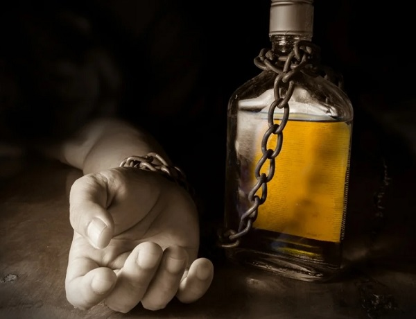

Алкогольная зависимость, или алкоголизм, - это хроническое психическое заболевание с постоянным нарастанием его тяжести, характеризующееся пристрастием к этиловому спирту (этанолу, алкоголю), физической и психической зависимостью от него.
На конец 2021 года в России насчитывалось 1,2 миллиона жителей с алкогольной зависимостью.
Из всех преступлений, совершённых в России в 2021 году, 28,2% совершено лицами, находящимися в состоянии алкогольного опьянения.
31% россиян вообще не употребляют спиртные напитки.
69% россиян употребляют алкоголь с различной частотой.